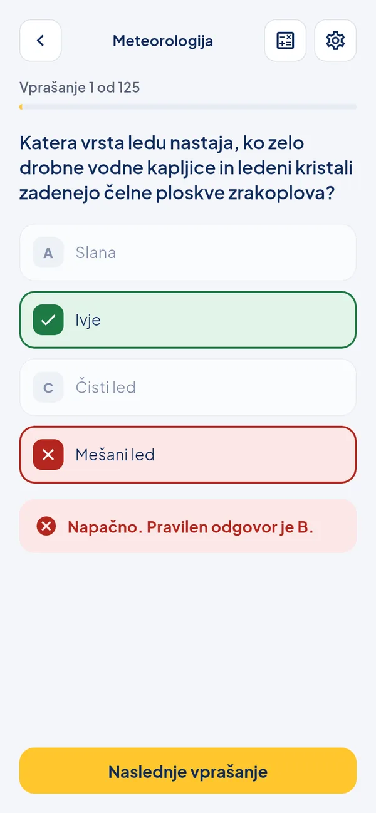

Vprašanja z razlago in testi kot na izpitu
645 vprašanj v devetih predmetih. Pri učenju takoj vidiš, ali je odgovor pravilen, in kateri je pravi. Test izbere naključna vprašanja iz enega ali vseh predmetov, rezultat pokaže šele na koncu, prag za uspeh je 75 %. Napredek po predmetih se shranjuje v napravi.
